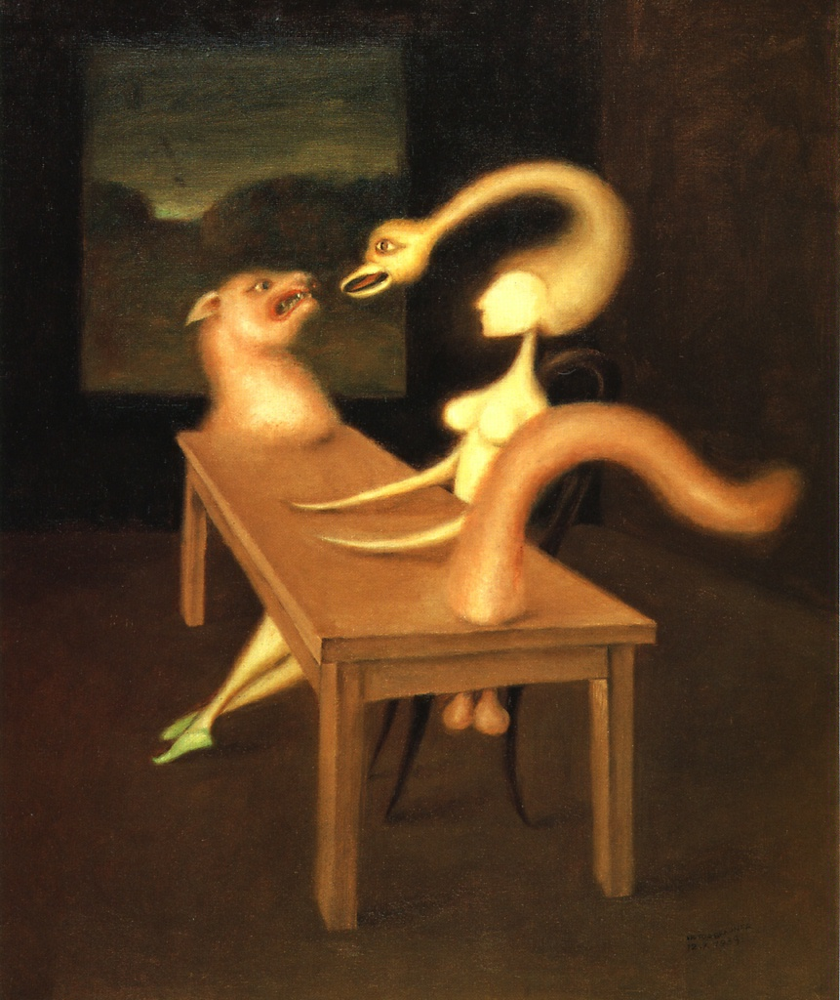

Простая комната решена в
приглушенно-коричневых и охри-
стых тонах. Посредине -
зооморфный стол - мебель с волчьей головой, хвостом и
гениталиями. За этим столом в
бесстрастной позе, словно ожидая,
когда ей подадут мясо, сидит
обнаженная дама. Ее лицо лишено
черт, а волосы извиваются
в прическе наподобие лебединой
шеи, заканчивающейся
птичьей головой с хищным
клювом. Изображенные лицом к
лицу птица и волк злобно
уставились друг на друга. Странные гибриды женщин, зверей и
предметов стали персонажами
целой серии картин Браунера. Эти
абсурдные, подобные галлюцинациям. фантазии восходят к
искусству сюрреализма которое освободило
художественный образ от каких бы
то ни
было доводов рассудка и
соображений логики. Сюрреалистические видения - дразнящие,
соблазнительные - открывали
тайники человеческого
подсознания, обнажая его
порочную
природу. Браунер родился в
Румынии, работал преимущественно во Франции. В 1931 году он
написал Автопортрет
с вырванным глазом, который
оказался пророческим: в 1938
году художник лишился левого
глаза во время драки в баре.